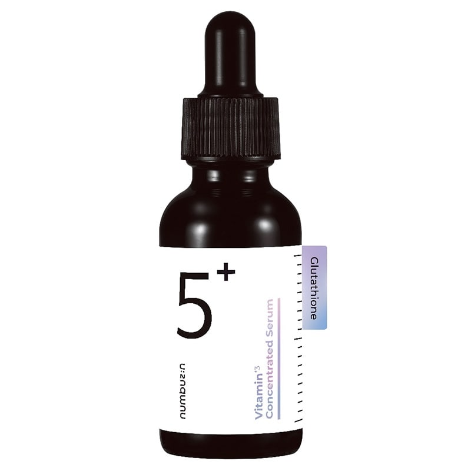

ひだか さん
2026年11月2日に日本でレビュー済み
★★★★★ 5.0
シミ対策に購入しました
サイズ：5番 白玉グルタチオンC美容液 30ml
美白やシミ対策にバツグン。
毎日使用してます。
多分シミが少しづつ薄くなってる…
同じ5番のトナーパッドを美容液をつけたあとシミの気になるところに貼ってしばらく置いておくと効果がもっとでます。
仕上がりはしっとりサラサラになるので最高！
ナンバーズイン(numbuzin) 5番 白玉グルタチオンC美容液（30ml）

高濃縮グルタチオンC*1 配合
グルタチオン × 2種のビタミンC誘導体・整肌成分で集中アプローチ
ナイアシンアミド配合でうるおい透明感*2
乾燥によるくすみを防ぎ、パッと明るいツヤ白玉肌へ
朝も夜も使いやすい「しっとりサラサラ」処方
ベタつかずスッと角質層までなじみ、メイク前にも◎
*1 グルタチオン、アスコルビン酸、アスコルビルグルコシド(全て整肌成分)
*2 保湿効果で乾燥によるくすみを防ぐ
年々濃くなる気がするシミや、過去の紫外線ダメージが気になる
乾燥によるくすみで、肌全体が暗く疲れて見える
ファンデーションやコンシーラーで隠す厚塗りメイクから卒業したい
美容クリニックや本格的なケアは高くてハードルが高い…
ビタミンC美容液はベタつきや刺激が気になり続けられない
1つでも当てはまった方へ。
それは「毎日のうるおい・整肌アプローチ」が足りていないサインかもしれません。
韓国スキンケアブランド「ナンバーズイン（numbuzin）」が辿り着いた、肌悩み番号「5番」の答え。
注目の整肌成分をギュッと凝縮し、角質層までうるおいを届けて透明感*2あふれるツヤ白玉肌へ導きます。
話題のグルタチオンに加え、ピュアビタミンC（アスコルビン酸）とビタミンC誘導体（アスコルビルグルコシド）の3種（全て整肌成分）をバランス良く配合。
肌のキメを整え、うるおいバリアをサポートするナイアシンアミド（整肌成分）を贅沢に配合。乾燥によるくすみを防ぎ、なめらかなツヤ肌へ導きます。
角質層までしっかりアプローチして乾燥によるくすみを防ぎ、
パッと明るい透明感*2のあるツヤ白玉肌へ！
実際にご使用いただいたお客様のリアルなレビューをご紹介
ひだか さん
2026年11月2日に日本でレビュー済み
サイズ：5番 白玉グルタチオンC美容液 30ml
美白やシミ対策にバツグン。
毎日使用してます。
多分シミが少しづつ薄くなってる…
同じ5番のトナーパッドを美容液をつけたあとシミの気になるところに貼ってしばらく置いておくと効果がもっとでます。
仕上がりはしっとりサラサラになるので最高！
チッチ さん
2026年9月18日に日本でレビュー済み
サイズ：5番 白玉グルタチオンC美容液 30ml
YouTubeで薬剤師の方がシミ取りはこれ！って説明していて買いました。お値段も2000円ちょっとで全く期待してなかったのですが、1瓶30ml使い終わる頃には、本当に何十年来のシミが薄くなり
ファンデーション要らないくらいに！
秋には美容クリニックにしみ取りに行こうと思ってましたが 必要なくなりました！主人も色が白くなったと騒いでおります！もちろんリピーターになります🍀
※個人の感想であり、効果・効能を保証するものではありません。
グルタチオン・アスコルビン酸・アスコルビルグルコシド（全て整肌成分）とナイアシンアミドを贅沢配合。乾燥によるくすみを防ぎ、内側から輝くようなツヤ白玉肌へ導きます。
朝のメイク前でも使いやすい、肌なじみの良い使用感。口コミでも「仕上がりはしっとりサラサラになるので最高！」と高評価。季節を問わず心地よくケアできます。
30mlで手に取りやすい価格帯だから、惜しみなく毎日継続可能。同じ「5番のトナーパッド」との併用で、気になる部分への集中パックケアもおすすめです。
numbuzin No.5 Vitamin Concentrated Serum
ナンバーズイン(numbuzin)
5番 白玉グルタチオンC美容液
※Amazon.co.jpの商品検索ページが新しいタブで開きます